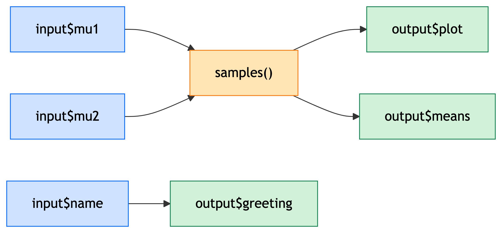
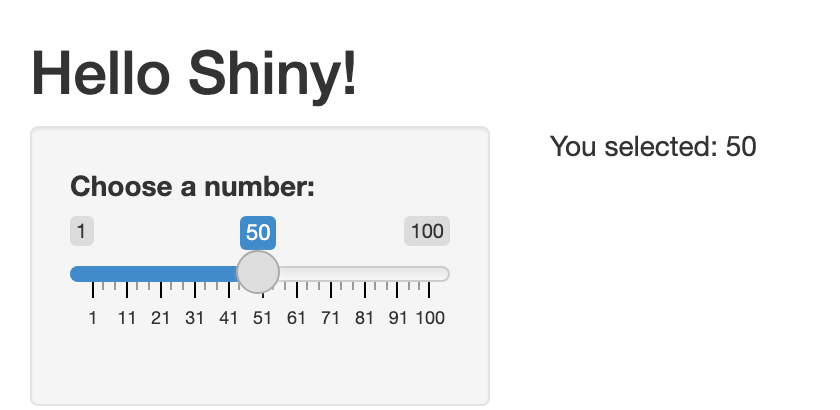
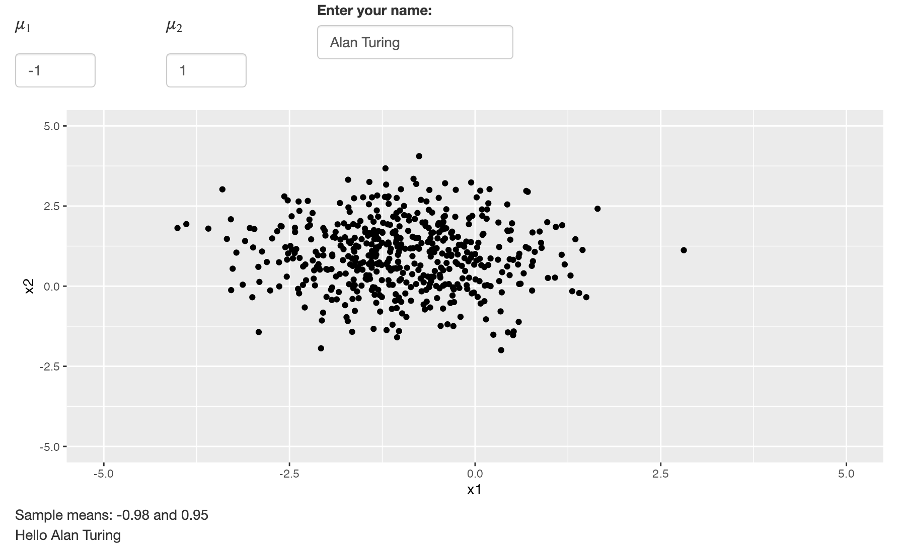
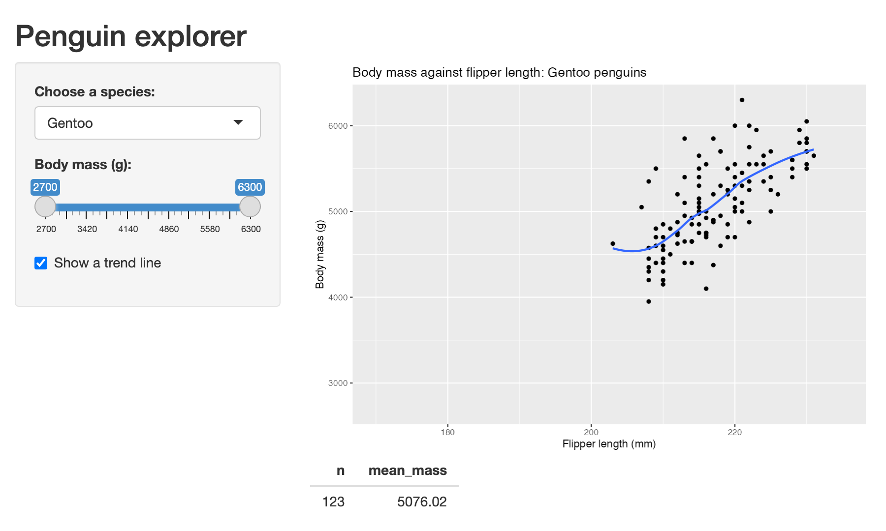

By the end of this lecture you will be able to:
ui and a server — and run oneSo far, our results reach other people as static reports: they see the plots and tables we chose.
Shiny is an R package for building interactive web apps entirely in R:
R; Shiny generates the website (HTML, CSS and JavaScript)The audience: people who don’t program in R.
shiny is not part of the tidyverse.R scripts, not .qmd files — a rendered Quarto document is a static web page, with no R running behind itapp.R, ending in shinyApp(ui, server)library(shiny)
ui <- fluidPage(
titlePanel("Hello Shiny!"),
sidebarLayout(
sidebarPanel(
sliderInput("num", "Choose a number:", 1, 100, 50)
),
mainPanel(
textOutput("result")
)
)
)
server <- function(input, output, session) {
output$result <- renderText({
paste("You selected:", input$num)
})
}
shinyApp(ui, server)
Task
How does the server know which slider to read, and where to put the text?
By name:
| In the UI | In the server |
|---|---|
sliderInput("num", ...) |
read it as input$num |
textOutput("result") |
fill it with output$result <- renderText(...) |
Every input’s first argument is its name; every output’s name must match an output$... assignment.
Task
Extend the app so that it also shows the square of the chosen number.
Two changes, joined by a name: a slot in the UI, and a render* function in the server.
Three ways to start it:
ui and server, then run shinyApp(ui, server)app.R and call runApp() (or runApp("path/to/app"))Listening on http://127.0.0.1:3689Shiny starts a web server on your computer. The browser and the R process stay connected: each change to an input is sent to R, which sends back updated outputs.
While the app runs your console is busy — stop it (stop icon, or Esc) to get your prompt back.
Task
When the user moves the slider, which code runs again?
Not the whole server function — only the renderText({...}) block, because it reads input$num, which has changed.
Shiny keeps a reactive graph: a record of which code reads which values. When a value changes, it re-runs only what depends on it.
Every piece of reactive code plays one of three roles in the graph:
| Role | Created with | Read with |
|---|---|---|
| Source | *Input("x", ...) in the UI |
input$x |
| Source | x <- reactiveVal(initial) |
x(); set with x(new_value) |
| Conductor | x <- reactive({...}) |
x() |
| Endpoint (output) | output$x <- render*({...}) |
displayed by *Output("x") |
| Endpoint (observer) | observe({...}), observeEvent(e, {...}) |
not read: run for side effects |
We want an app that draws a random sample of 500 points, whose \(x\) and \(y\) coordinates are normally distributed with means \(\mu_1\) and \(\mu_2\) chosen by the user.
It should show the sample in a scatter plot, and print the sample means beneath it. Separately, it greets the user by name.
Two outputs need the same sample. Where should it be drawn?
server <- function(input, output, session) {
samples <- reactive(tibble(
x1 = rnorm(500, input$mu1, 1),
x2 = rnorm(500, input$mu2, 1)
))
output$plot <- renderPlot({
ggplot(samples(), aes(x = x1, y = x2)) +
geom_point() +
coord_cartesian(xlim = c(-5, 5), ylim = c(-5, 5))
})
output$means <- renderText({
paste("Sample means:", round(mean(samples()$x1), 2), "and",
round(mean(samples()$x2), 2))
})
output$greeting <- renderText(paste("Hello", input$name))
}

Sources → conductor → endpoints. An arrow means “is read by”.
Changing \(\mu_1\) re-runs samples(), the plot and the means. Typing a name re-runs only the greeting.
Task
Why not just call rnorm() inside each render* block?
Each output would draw its own sample: the means printed under the plot would describe different points from the ones plotted.
A reactive() computes the sample once and caches it, so every output sees the same data — and it is only recomputed when input$mu1 or input$mu2 changes.
Task
Each line below is inside server. Each fails. Why?
reactive values can only be read inside reactive code (reactive, render*, observe*): “Operation not allowed without an active reactive context”.
missing parentheses: samples is a function, so samples$x1 gives “object of type ‘closure’ is not subsettable”. Use samples()$x1.
inputs are read-only — the user sets them. If the server needs a value it can change, use reactiveVal().
Rule of thumb:
reactive()observe({...}) re-runs when anything it reads changesobserveEvent(event, {...}) re-runs only when event changesTask
An app has two buttons and a line of text:
Write the server so that the text shows a count that the buttons increase and reset. There’s no input holding the count — where does it live?
server <- function(input, output, session) {
counter <- reactiveVal(0) # a source the server can change
observeEvent(input$inc, {
counter(counter() + 1) # set by calling with a value
})
observeEvent(input$reset, {
counter(0)
})
output$value <- renderText({
paste("Counter is:", counter()) # read by calling it
})
}
Read the data once, outside the server, not on every change:
A range slider: give value two numbers, and read both ends in the server:
Locally, the app runs in your R session — anyone else needs R and every package.
Deploying puts the app on a server (e.g. shinyapps.io, or your own Shiny Server) and gives users a web link. They need only a browser.
Common uses: dashboards, data exploration tools, statistical “what-if” calculators, teaching demos, prototypes for stakeholders.
Task
You deploy the penguin explorer and 200 people use it at once. Then you add a text box that lets users type a filter condition, run with eval(parse(text = input$filter)). What could go wrong?
R process serves everyone, and R does one thing at a time — a slow computation for one user makes everyone waitui (layout, inputs, outputs) and a server (render functions), joined by namesreactive) → endpoints (render*, observers)reactive() (a value) and observeEvent() (an action), and use req() to wait for the userWe didn’t cover in detail:
message() and browser()reactiveValues(), conditionalPanel(), renderUI()validate() / need() for friendlier messages than req()bslib layoutsThe code for all four demo apps is on the Shiny demo apps page, ready to copy into RStudio.